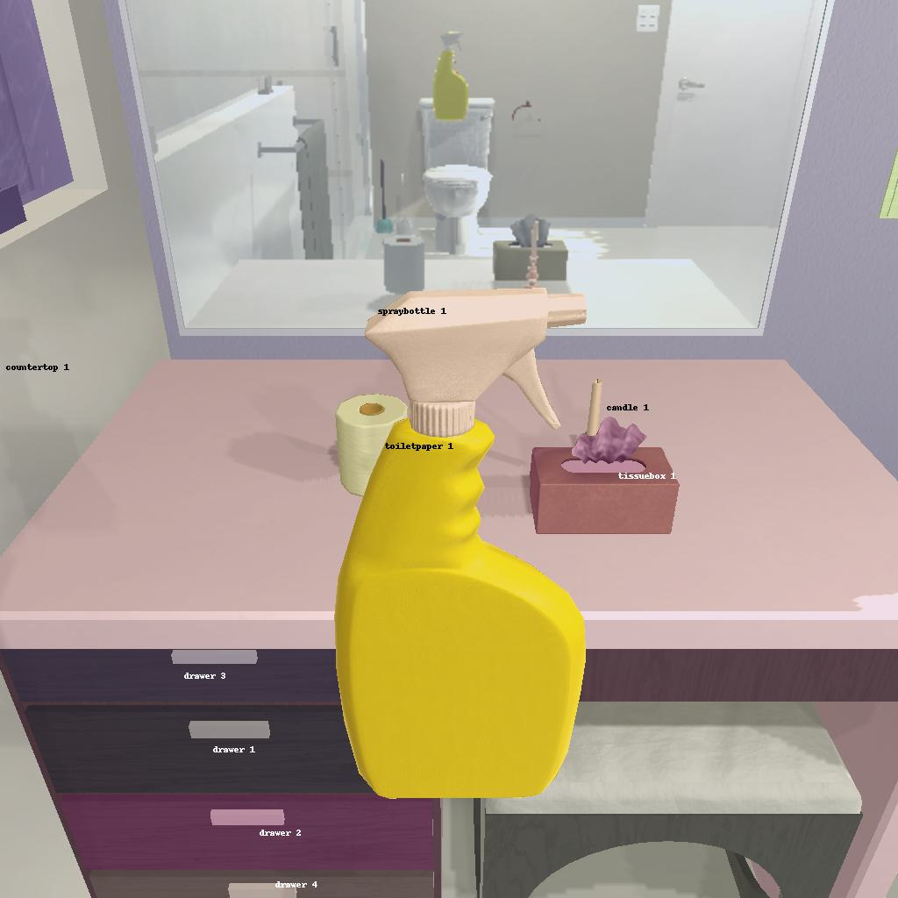

---------------------------------------------------------task: 28---------------------------------------------------------
--------------------------------------------------------------------------------------------------------------------------------------------------------------------
--------------------------------------------------------------------------------------------------------------------------------------------------------------------
Step:--------------------------------------------------------------------------3-------------------------------------------------------------------------------
----------------------------------------
VLM Prompt:
Image1:
Image2:
**Instruction**
1. Analyze the provided image to identify all visible household objects, focusing on those relevant to the task description "find two spraybottle and put them in toilet."
2. Use the analysis of the image and the task hint "The agent must find an object of the desired type, pick it up, find the correct location to place it, put it down there, then look for another object of the desired type, pick it up, return to previous location, and put it down there with the other object." to answer the question: what is the most reasonable action in the choices for the task description "find two spraybottle and put them in toilet"?
4. Decide and write the answer using the template: The answer is: (i): , where i is the real number. If there is no desired object in the image, search every place based on **Initial Observation** to find the object. And if no one is exactly correct, choose a similar answer.
**Initial Observation**
You are in the middle of a room. Looking quickly around you, you can see bathtub (1), bathtubbasin (1), cart (1), sink (1), garbagecan (1), sinkbasin (1), countertop (1), drawer (1-4), toilet (1), toiletpaperhanger (1)
**Answer Choices**
(1): go to bathtub 1
(2): go to bathtubbasin 1
(3): go to cart 1
(4): go to sink 1
(5): go to garbagecan 1
(6): go to sinkbasin 1
(7): go to drawer 1
(8): go to drawer 2
(9): go to drawer 3
(10): go to drawer 4
(11): go to toilet 1
(12): go to toiletpaperhanger 1
(13): put spraybottle 1 in/on countertop 1
(14): examine spraybottle 1
(15): examine countertop 1
**Answer**
Let's think step by step by following the instructions.
----------------------------------------
----------------------------------------
Original Response:
First, we need to identify the visible household objects in the image that are relevant to the task. In the image, we can see a spraybottle labeled "spraybottle 1" on the countertop. This is one of the objects we need to find according to the task description.
Next, we follow the task hint, which suggests that the agent must pick up the desired object and place it in the correct location, then look for another object of the desired type and do the same.
Based on the **Initial Observation**, we know that the toilet is labeled as "toilet 1," and we need to put the spraybottles there according to the task description.
Looking at the **Answer Choices**, the most reasonable next action would be to pick up the visible spraybottle and move it to the location specified in the task. The correct action for this would be to "examine spraybottle 1" to pick it up and then "go to toilet 1" to place it there. However, these actions are not combined in any of the choices. The closest action that would start this process is examining spraybottle 1 to pick it up.
The answer is: (14): examine spraybottle 1
----------------------------------------
----------------------------------------
>>> Refine Original VLM Response and Get Pure Action: examine spraybottle 1
----------------------------------------
-----------------------------------------------------------------
Running time: 13.412926435470581 seconds
Total Money: 13.897650000000004
-----------------------------------------------------------------
-----------------------------------------------------------------
Text Observation:This is a normal spraybottle 1
-----------------------------------------------------------------
UNSUCCEED